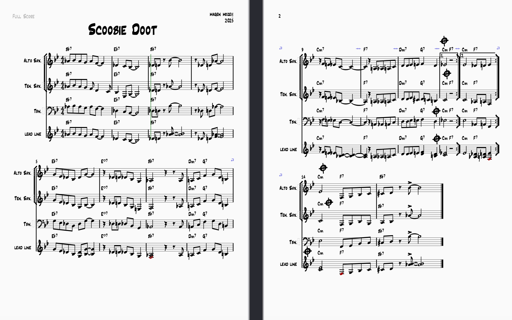

Live Performance (I wrote Scoobie Doot! Timestamp 37:17)
Scoobie Doot Score

Outside of technology, I study jazz saxophone and improvisation at USC. I enjoy exploring the balance between structure and spontaneity through blues, bebop, jazz standards, and ensemble performance.
I’ve had the opportunity to study in person with award-winning musicians and educators including Alex Hahn , Katie Thiroux , David Crozier , and David Arnay .